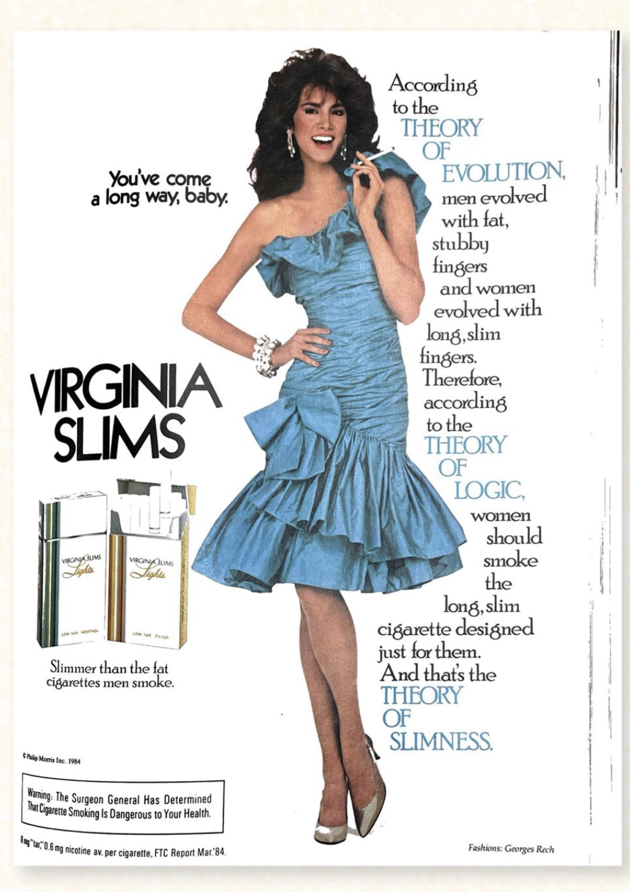

Visualising Consumerism Through Advertising
Here is a timeline of ads to see how Consumerism has evolved.
Overconsumption is the problem.
1940s
1950s
1960s
1970s
1980s
1990s
2000s
2010s
2020s
1980s Advertisements
Cutty Sark Scotch
Virginia Slims Cigarettes

1990s Advertisements
McDonalds Big Mac
AT&T Wrist Phone
2000s Advertisements
got milk?
Fantanas of Fanta
2010s Advertisements
Nike Trainer One
Black & Blaze
2020s Advertisements
Zoom on NASDAQ
Apple Vision Pro